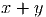
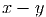
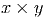
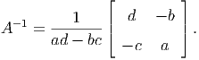
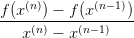
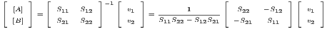
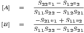

O erro presente relativo nas operações elementares de adição, subtração, multiplicação e divisão é da ordem do epsilon de máquina. Se estivermos usando uma máquina com 64 bits, temos que .
Este erro é bem pequeno! Assumindo que e são representados com todos dígitos corretos, temos aproximadamente 15 dígitos significativos corretos quando fizemos uma das operações , ,  ou .
Mesmo que fizéssemos, por exemplo,  operações elementares em ponto flutuante sucessivas, teríamos no pior dos casos acumulado todos esses erros e perdido  casas decimais (.
Entretanto, quando subtraímos números muito próximos, os problemas aumentam.